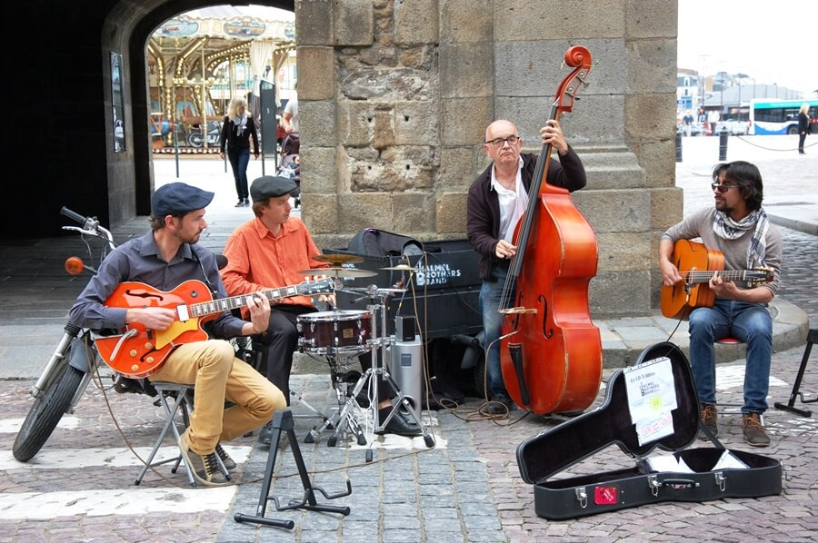
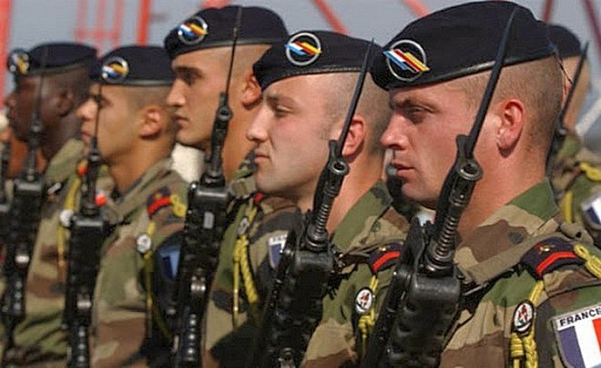

Вернуться на главную страницу
Gallery
Культура
Мода
Мода во Франции - важный предмет в культуре и общественной жизни страны, а также важная часть ее экономики . Дизайн и производство одежды стали заметными во Франции с 15 века . В течение 17 - го века, мода переросла в богатую промышленность, для экспорта и местного потребления, Королевский министр финансов , Жан-Батист Кольбер , говорит : « Мода во Францию , что золотые рудники Перу в Испанию ... ». В 19 веке мода превратилась в специализацию современного термина от кутюр , зародившегося в 1860-х годах, привносящего в модный арго хороший вкус . Термин прет-а-порте появился на свет в 1960-х годах, выступая против традиционных представлений о моде и процессе изготовления одежды, удовлетворяя потребности поп-культуры и средств массовой информации .
Самыми грандиозными событиями в индустрии мировой моды являются Недели моды. Сейчас они проходят в самых разных городах, Барселоне, Берлине, Сингапуре, но самыми важными остаются те четыре, что проводятся в Нью-Йорке, Лондоне, Милане и Париже. Недели моды во Франции завершают показы коллекций Весна-Лето и Осень-Зима. Для женской одежды они проходят в октябре (весенне-летняя женская коллекция) и в марте (осенне-зимняя женская коллекция). Недели мужской моды обычно короче 7 дней, в Париж приходят в январе и июне. Сразу после них проходят Недели моды от кутюр (haute couture). Точную дату проведения событий каждый год назначает Французская федерация высокой моды и прет-а-порте. Чаще всего эти мероприятия проводятся в торгово-выставочном комплексе (его приятно называть торгово-выставочным пространством) Carrousel du Louvre под Тюильри. Увы, просто купить билет и прийти на Fashion Week в Париже, чтобы полюбоваться дизайнерскими вещами и звёздными гостями, нельзя. Вход осуществляется только по специальным пригласительным, которые распространяются среди знаменитостей, дизайнеров, журналистов, фотографов и покупателей коллекций (байеров).
Кино
Именно во Франции родился кинематограф, когда 28 декабря 1895 года в салоне «Гран-кафе» на бульваре Капуцинок (Париж)[1] состоялся публичный показ «Синематографа братьев Люмьер» (в кафе было несколько залов с модными в те времена «экзотическими» названиями; показ состоялся в зале с названием «Индийская пещера», в результате чего в некоторые иностранные справочники попала нелепая версия, будто показ фильма происходил в некоем «индийском салоне»). Французское кино с тех пор сохраняет свою популярность во Франции и за рубежом, а по кассовому успеху у широкой публики уступает лишь американскому и индийскому. В начальный период развития французское кино было преимущественно трюковым, важная роль принадлежала изобретателю кинотрюковой съёмки — автору «кинофеерий» Жоржу Мельесу и фирме «Фильм д’ар», привлёкшей к работе в кино видных драматургов, театральных актёров и композиторов. В 1910-е годы международной известностью пользовались кинокомедии с участием М. Линдера, авантюрные серии Л. Фейада. До Первой мировой войны французское кино выпускало около 90 % мировой кинопродукции (в основном усилиями компаний «Пате́» и «Гомо́н»). В послевоенные годы во Франции возникло движение против использования кино в коммерческих целях. Движение возглавили представители киноавангарда того времени. Занимаясь формальными экспериментами, авангардисты в то же время значительно расширили выразительные возможности кино. Ими создавались киноклубы, пропагандировавшие лучшие достижения мирового кино.
Кто-кто, а французы умеют снимать отличное кино. Про любовь, про семью, про дружбу и любые другие вечные ценности. Без пафоса и натуги, естественно и тепло. Практически любой фильм, снятый в этой стране, западает в душу и оставляет светлую размышлятельную грусть. Даже если это была комедия.
Топ 10 фильмов Франции
- 1+1
- Леон
- Терминатор 2:судный день
- Пятый элемент
- Капернаум
- Господим Никто
- Заложница
- Балерина
- Ангел А
- Девятые врата
Музыка
Французская музыка — одна из самых интересных и влиятельных европейских музыкальных культур, которая черпает истоки из фольклора кельтских и германских племен, живших в давние времена на территории нынешней Франции. Со становлением Франции в период Средневековья во французской музыке слились народные музыкальные традиции многочисленных регионов страны. Французская музыкальная культура развивалась, взаимодействуя также с музыкальными культурами других европейских народов, в частности итальянского и немецкого. Начиная со второй половины XX века музыкальная сцена Франции обогатилась музыкальными традициями выходцев из Африки. Она не остаётся в стороне от мировой музыкальной культуры, вобрав в себя новые музыкальные тенденции и придав особый французский колорит джазу, року, хип-хопу и электронной музыке. Французская музыка всегда считалась одной из лучших в мире.
Старинная музыка Франции – особый пласт мировой музыкальной культуры. Музыкальному искусству в этой стране всегда отводилась особая роль – она была неотъемлемым составляющим семейного быта, уличных праздников, а с принятием христианства и религиозных обрядов. Старинная французская музыка сыграла величайшую роль не только в музыкальной истории своей страны, но и многих стран Европы. А самое значительное: она подарила Франции национальную оперу и балет, которые в будущем романтическом столетии соединились в грандиозном жанре большой французской оперы, благодаря которой Париж стал самой настоящей музыкальной империей.
Общество
Система здравоохранения во Франции в настоящее время является одной их лучших в мире. Французы имеют медицинское страхование двух видов: добровольное и, конечно же, обязательное медицинское страхование. Французский народ обеспечивается медицинскими услугами на достойном уровне, и более 80% граждан страны довольны работой докторов и функционированием системы здравоохранения в целом. Также, французы гордятся своей системой социального обеспечения, которая считается одной из детальных в мире. Государство тратит большие суммы на страхование занятости, финансирование программ обучения, поддержку материнства, эмиграции и отдельных отраслей хозяйств. К примеру, декретный отпуск во Франции начинается за шесть недель до рождения ребенка и длится в течение четырех месяцев после. А ежегодный оплачиваемый отпуск составляет пять недель.
Высокий уровень развития экономики и научно-технические достижения позволили развернуть в стране производство новейших образцов оружия и военной техники. франция занимает второе место среди западноевропейских стран по производству авиационной и ракетно-космической техники. Эта отрасль представляют национальное авиаракетно-космическое промышленное объединение «Аэроспасьяль» и государственная двигателестроительная компания CHEKMA, а также свыше 120 различных компаний, насчитывающих более 100 заводов и предприятий.Франция располагает достаточно развитой сетью наземных транспортных коммуникаций, включающей железные и автомобильные дороги, внутренние водные пути, а также трубопроводы. Железные дороги принадлежат национальному обществу железных дорог (СНЦФ). Пo опубликованным в иностранной печати данным, общая протяжённость эксплуатируемых железнодорожных линии составляет 34 830 км (ширина колеи 1435 мм), из которых 9330 км электрифицировано. На основных магистралях уложены двухпутные (около 16 тыс. км), а при подходе к Парижскому узлу — многопутные линии.